Taining An
Hi, I’m Taining. I completed my M.S. in Sports Training at Beijing Sport University, where I designed and ran a study of exercise and time-restricted eating in young adults with obesity. My work has included supervising exercise interventions, conducting physiological tests, and processing blood samples.
I started out as a volleyball athlete, focused on my own training. During my master’s, I began studying the effects of exercise on the body. Now, I want to understand how and why those changes happen.
During my master’s, I became interested in how exercise and eating patterns affect metabolic health, particularly how changes in inflammation relate to fat loss. For my Ph.D., I’d like to build on my experience in human studies and explore the mechanisms behind these responses.
Research
Exercise, eating patterns, and inflammation
I designed and led the day-to-day management of an eight-week, four-arm randomized trial involving 122 young adults with obesity. We compared high-intensity functional training plus aerobic exercise, time-restricted eating, their combination, and a control group.
My responsibilities included recruitment, randomization, exercise supervision, adherence monitoring, DXA assessments, and fasting blood sample processing. The study examined body composition and inflammatory markers, including SII, IL-6, and TNF-α.
The question I want to explore further: Can exercise reduce inflammation independently of fat loss?
My wider experience includes treadmill VO₂max testing, force-platform assessments, PBMC isolation, and DNA extraction. More detail is in my CV.
Selected publications & ongoing work
-
Effects of time-restricted eating and concurrent training on body composition and dietary intake in young adults with obesity: A four-arm randomized controlled trial
-
Does Change in Fat Mass Mediate Exercise-Induced Changes in the Inflammatory Profile of Young Adults with Obesity? A Mediation Analysis of a Four-Arm Randomized Controlled Trial
Research in practice
A few moments from the exercise interventions, physiological assessments, and laboratory work I’ve been involved in.
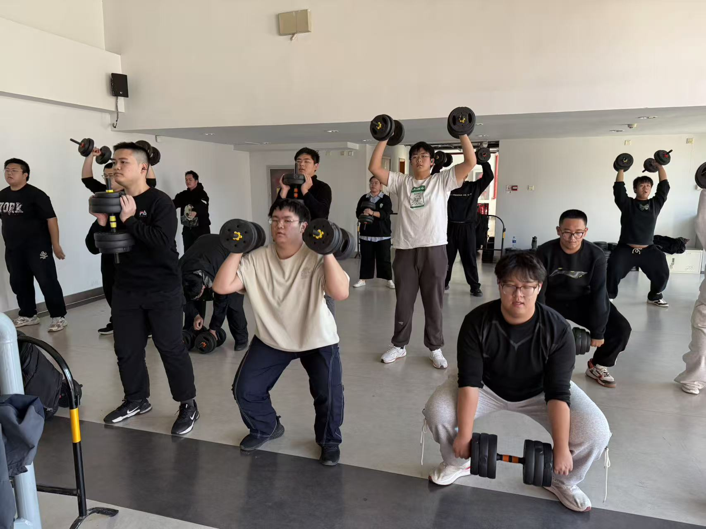
Exercise interventions
High-intensity functional training (HIFT)
Leading participants through high-intensity functional training (HIFT).
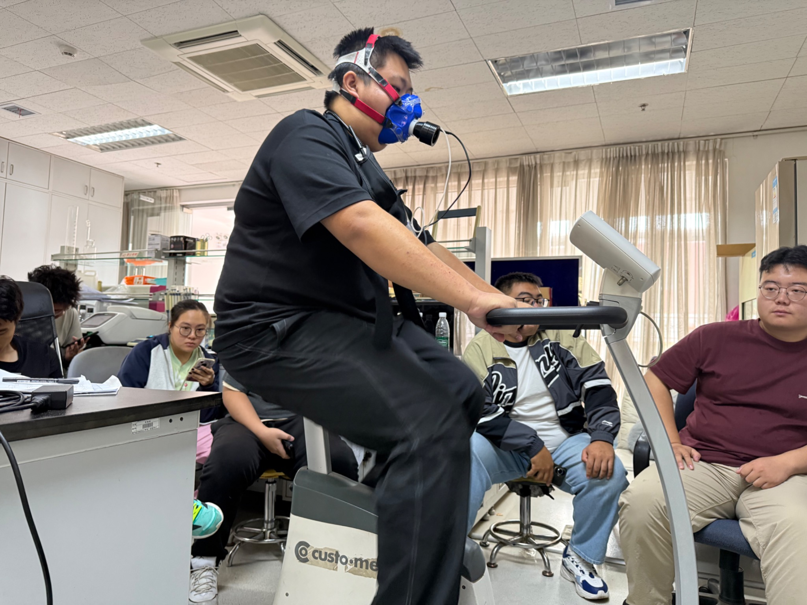
Physiological testing
VO₂max testing
Conducting maximal oxygen uptake (VO₂max) testing with participants with obesity.
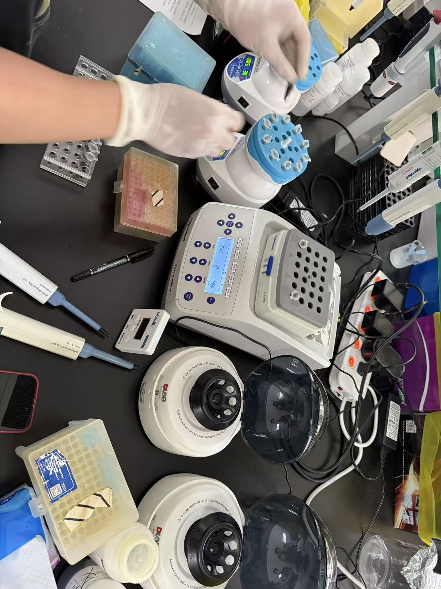
Laboratory work
Blood sample processing
Preparing samples and operating a centrifuge during laboratory processing.
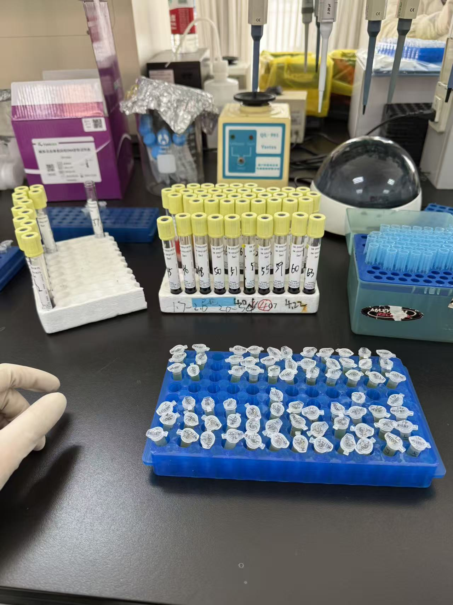
Laboratory work
Blood sample processing
Processing blood samples from study participants.
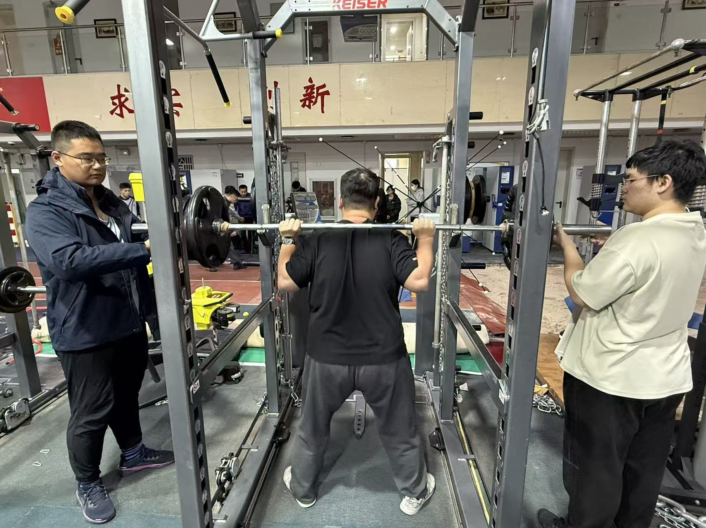
Physiological testing
One-repetition maximum (1RM) testing
Conducting 1RM testing with participants.
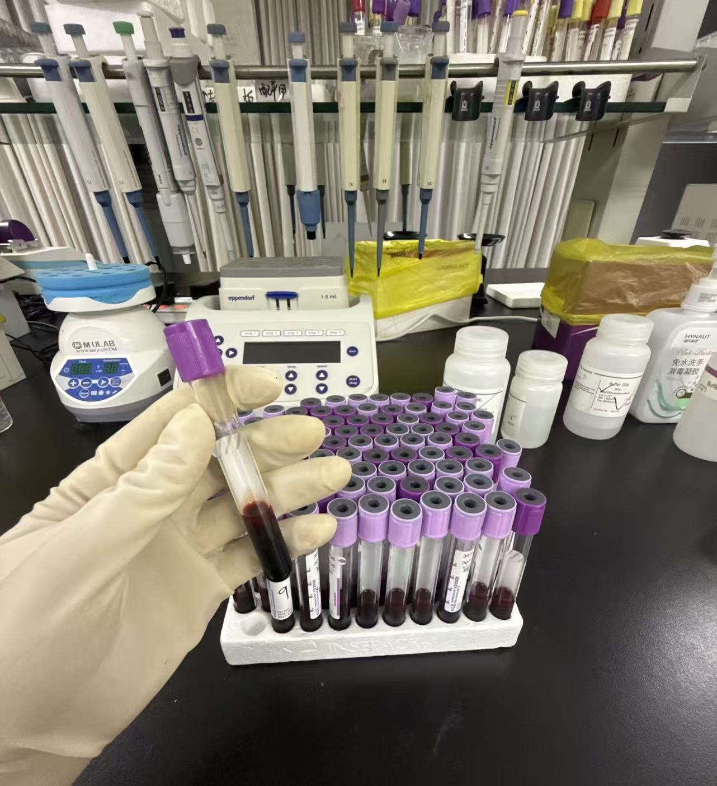
Laboratory work
Blood sample processing
Processing participants’ blood samples in the laboratory.
View 5 more photographsShow fewer photographs
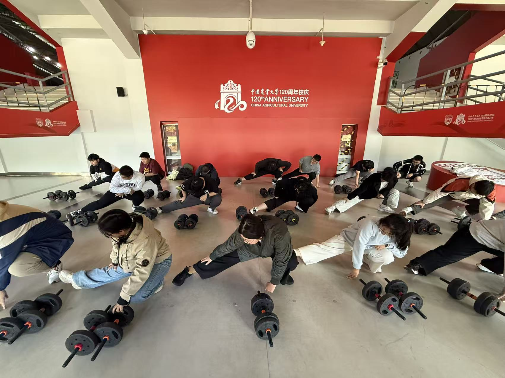
Exercise interventions
Warm-up before the intervention
Leading participants through warm-up activities before the exercise intervention.
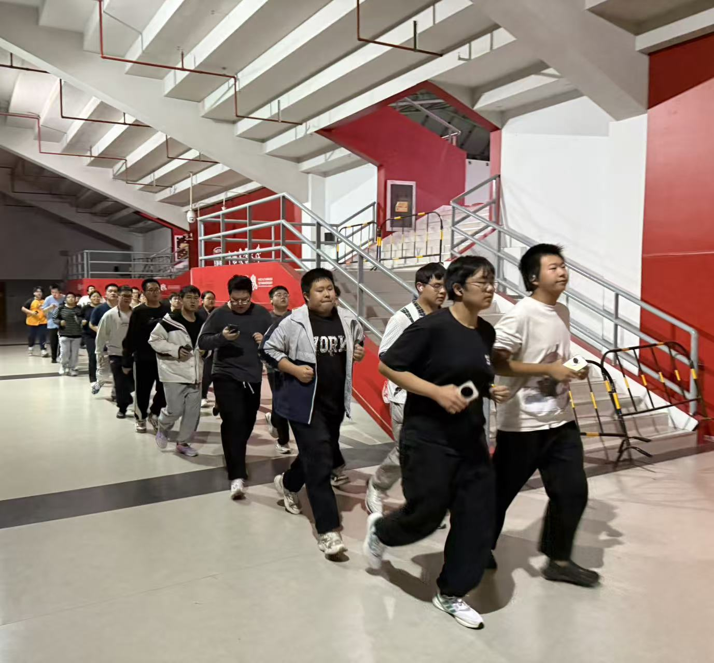
Exercise interventions
Aerobic exercise intervention
Participants taking part in an aerobic exercise intervention.
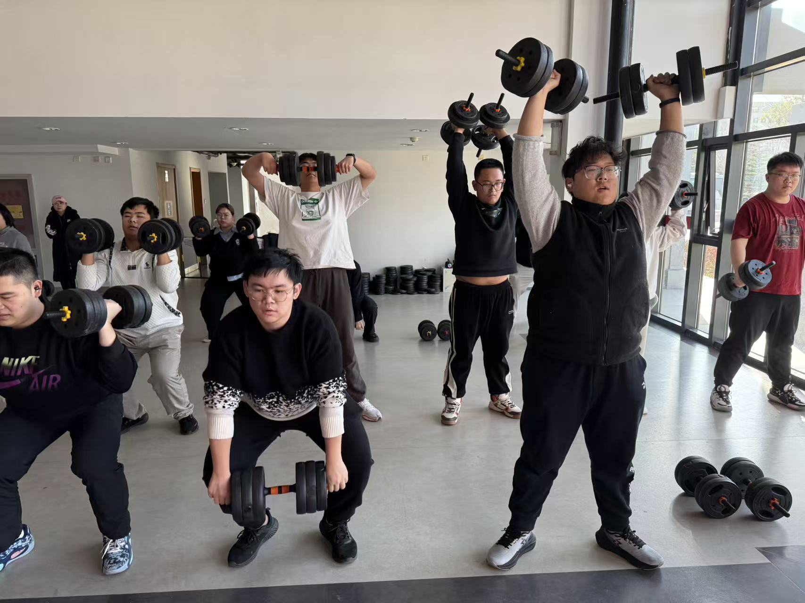
Exercise interventions
High-intensity functional training (HIFT)
Leading participants through a high-intensity functional training (HIFT) intervention.
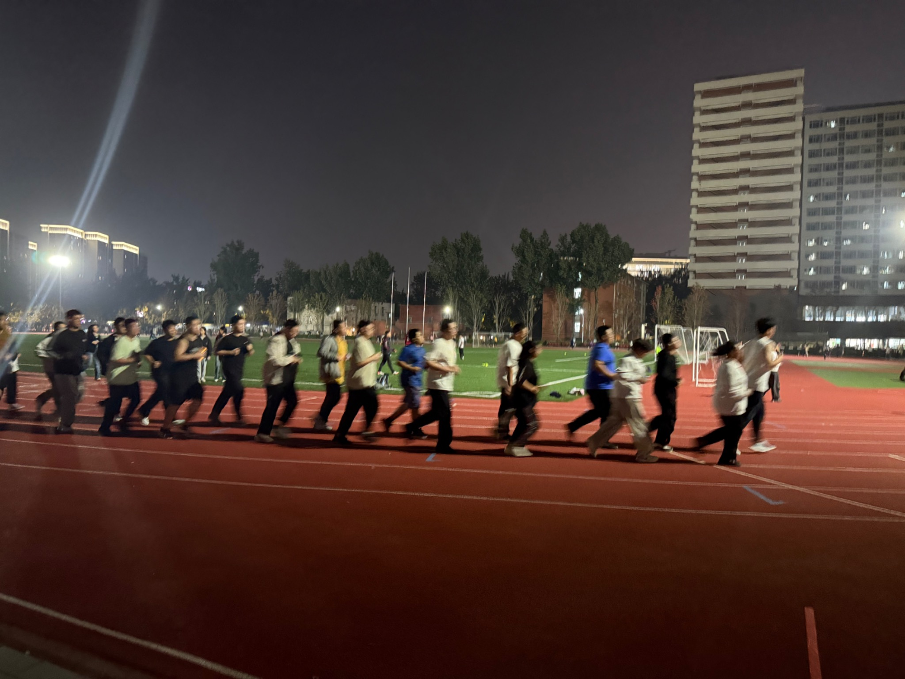
Exercise interventions
Aerobic exercise intervention
Leading participants through an aerobic exercise intervention.
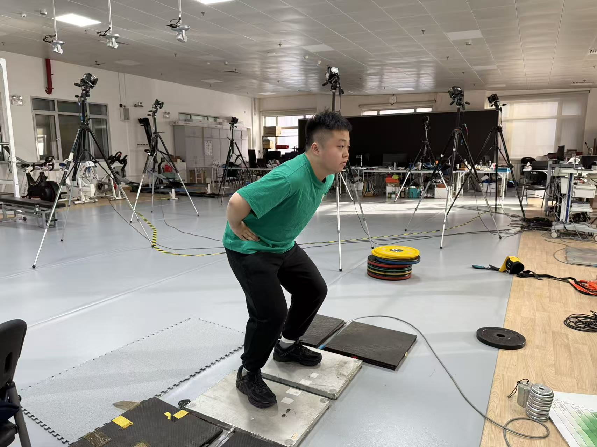
Physiological testing
Countermovement jump (CMJ) testing
Operating the force platform for countermovement jump (CMJ) testing.
Short videos
Exercise interventions and physiological testing.
Leading participants with obesity through high-intensity functional training (HIFT).
Leading participants with obesity through high-intensity functional training (HIFT).
Conducting treadmill VO₂max testing with elite runners as part of a Xiaomi smartwatch validation project at Beijing Sport University. My role included fitting gas-analysis masks, managing the treadmill protocol, and monitoring gas-exchange data with a Cortex metabolic analyzer.
View 1 more videoShow fewer videos
Participants taking part in an aerobic exercise intervention.
A little more about me
Volleyball has been part of my life as both an athlete and a teacher. Alongside my research, I’ve taught volleyball and helped deliver university exercise classes, including a teaching internship at China Agricultural University.
Outside the lab, I enjoy working out at the gym and a variety of outdoor activities. I also like photography, listening to classical music, and watching NBA games.
2024240916@bsu.edu.cn